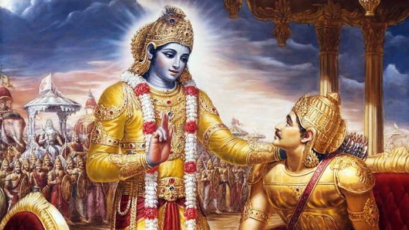

Chapter 1: Observing the Armies on the Battlefield of Kurukshetra
Two armies, those of the Pandavas and the Kauravas, face each other on the Battlefield of Kurukshetra. Many signs indicate victory for the Pandavas. Dhrtarashtra, the Pandavas’ uncle and the Kauravas’ father, doubts the possibility of his sons’ victory and asks Sanjaya, his secretary, to describe the scene on the battlefield.
Arjuna, one of five Pandava brothers, undergoes a crisis just before the fight. He is overwhelmed by compassion for his family members and teachers, whom he is supposed to kill. After submitting before Krishna many noble and moral reasons why he wishes not to fight, Arjuna casts aside his weapons, overwhelmed with grief. Arjuna’s reluctance to fight indicates his kind heart; such a person is fit to receive transcendental knowledge.
Chapter 2: Contents of the Gita Summarized
Krishna does not sympathize with Arjuna’s arguments. Rather, He reminds Arjuna that his duty is to fight and orders him to overcome his weakness of heart. Arjuna is torn between his aversion to killing his relatives and Krishna’s desire that he should fight. Aggrieved and confused, Arjuna asks Krishna for guidance and becomes his disciple.
Krishna takes up the role of Arjuna’s Spiritual Master and teaches him that the soul is eternal and cannot be killed. Dying in battle promotes a fighter to the heavenly planets, so Arjuna should rejoice that those persons he is about to kill will achieve superior births. A person is eternally an individual. Only his body perishes. Thus, there is nothing to lament.
Arjuna’s decision not to fight is based on his desire to enjoy life with his relatives, even at the cost of wisdom and duty. Such a mentality keeps one bound to the material world. Krishna advises Arjuna to engage in buddhi-yoga, work without attachment to the results. By fighting in this way, Arjuna will free himself from the cycle of birth and death and become eligible to enter the kingdom of God.
Chapter 3: Karma – Yoga
Arjuna is still confused. He thinks that buddhi-yoga means that one should retire from active life and practice penance and austerities. But Krishna says, “no. Fight! But do it in a spirit of renunciation and offer all the results to the Supreme. This is the best purification. By working without attachment, one attains the Supreme.”
Performing sacrifices for the pleasure of the Lord guarantees material prosperity and freedom from sinful reactions. Even a self-realized person never gives up his duty. He acts for the sake of educating others.
Arjuna then asks the Lord what it is that causes one to engage in sinful acts. Krishna answers that it is lust which induces one to sin. This lust bewilders one and entangles one in the material world. Lust presents itself in the senses, mind, and intelligence, but it can be counteracted by self – control.
Chapter 4: Transcendental Knowledge
The science of Bhagavad – gita was first spoken by Krishna to Vivasvan, the sun-god. Vivasvan taught the science to his descendents, who taught it to humanity. This system of transmitting knowledge is called disciplic succession. Whenever and wherever there is a decline in religion and a rise of irreligion, Krishna appears in His Original Transcendental Form, untouched by material nature. One who understands the transcendental nature of the Lord attains the Lord’s eternal abode at the time of death. Everyone surrenders to Krishna, directly or indirectly, and Krishna reciprocates according to one’s surrender.
“A gift is pure when it is given from the heart to the right person at the right time and at the right place, and when we expect nothing in return”
Krishna created a system called varnasrama, with divisions of social and spiritual life, to engage people according to their psychophysical natures. By sacrificing the results of work to the Supreme, people gradually rise to the platform of transcendental knowledge. Ignorant and faithless people who doubt the revealed knowledge of the scriptures can never be happy, nor attain God Consciousness.